The Home Depot
Simplifying Gifting for
a Seamless Transaction
Home Depot's gift card experience, redesigned with the customer in mind — an end-to-end journey that brings discoverability, choice, and seamless checkout together.
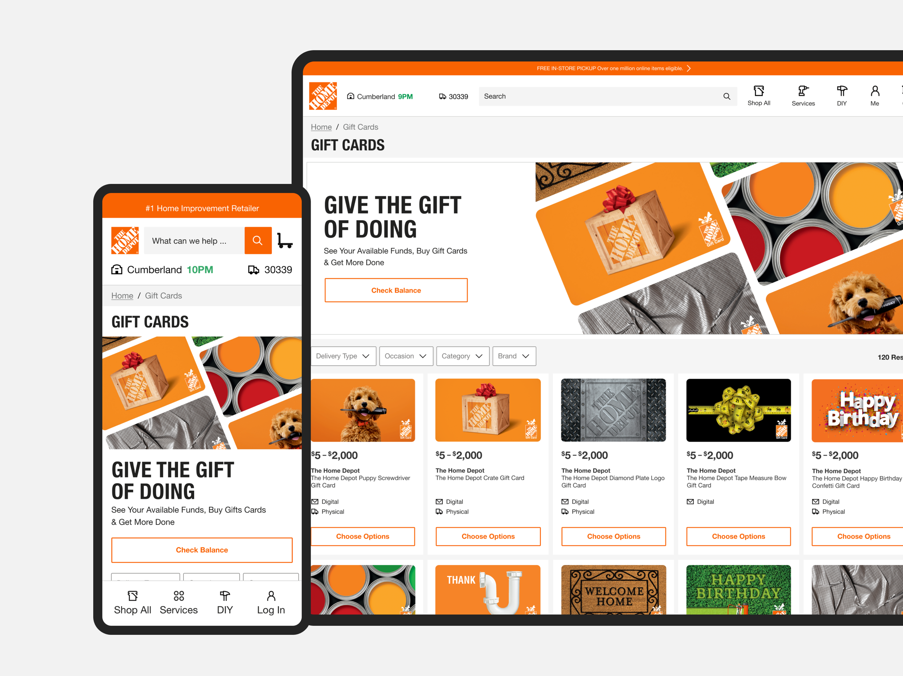
Overview
Home Depot's Gift Card Business team aimed to transition from a third-party provider to an in-house solution. Initially scoped as an MVP to enable mixed cart functionality, the project evolved to include specialty gift cards and a fully updated design informed by user research. The goal was to improve usability, streamline checkout, and give the business greater control over the customer experience.
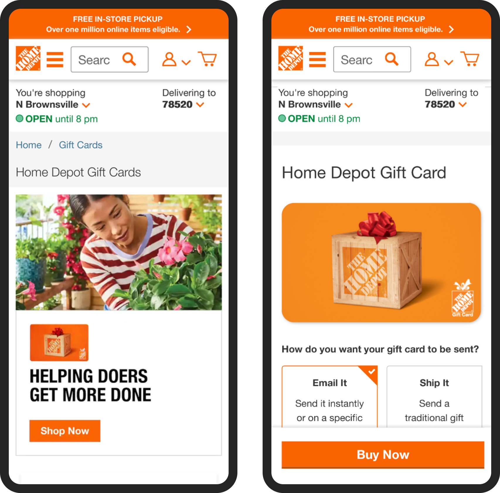
Problem Statement
- Reliance on a third-party platform limited design control, optimization, and scalability
- Customers could not purchase gift cards alongside other products
- The legacy landing page lacked clarity, engagement, and alignment with user behavior insights
Research & Insights
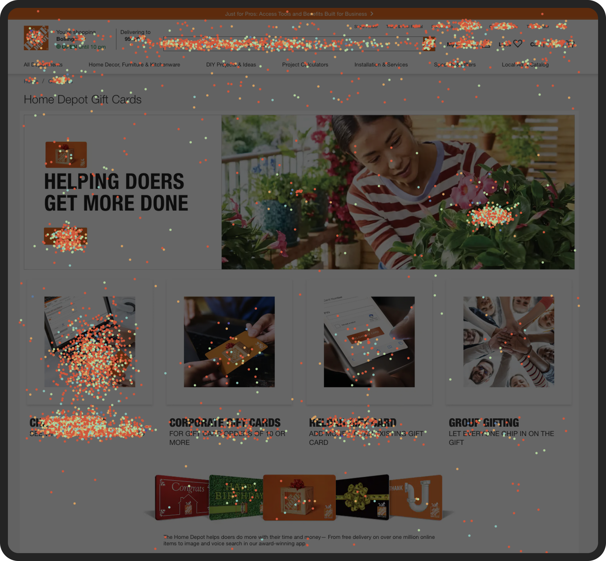
User behavior showed high reliance on search and navigation links to find gift cards, many visits for balance checking, and confusion over the hero banner leading to misdirected clicks.
Competitive Analysis
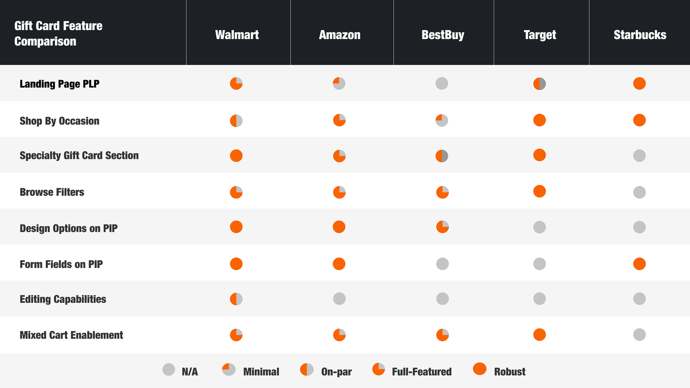
A competitive review of leading retailer gift card experiences revealed key differentiators. Walmart stood out for its adjustable pricing, Walmart Pay integration, and embedded ratings and reviews. Target offered strong merchandising with themed designs and multiple delivery options. Together, these insights highlighted the importance of clear merchandising, variety, and seamless payment integration.
UX and Interaction Design
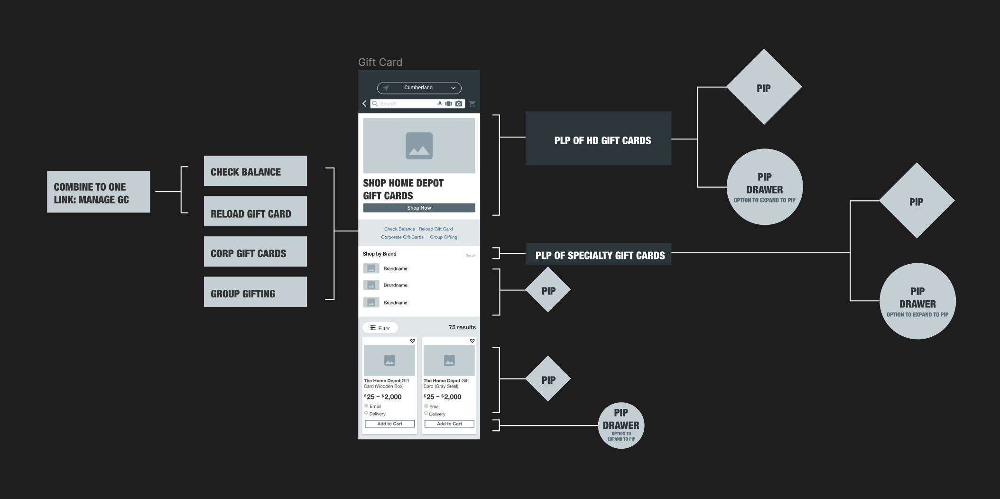
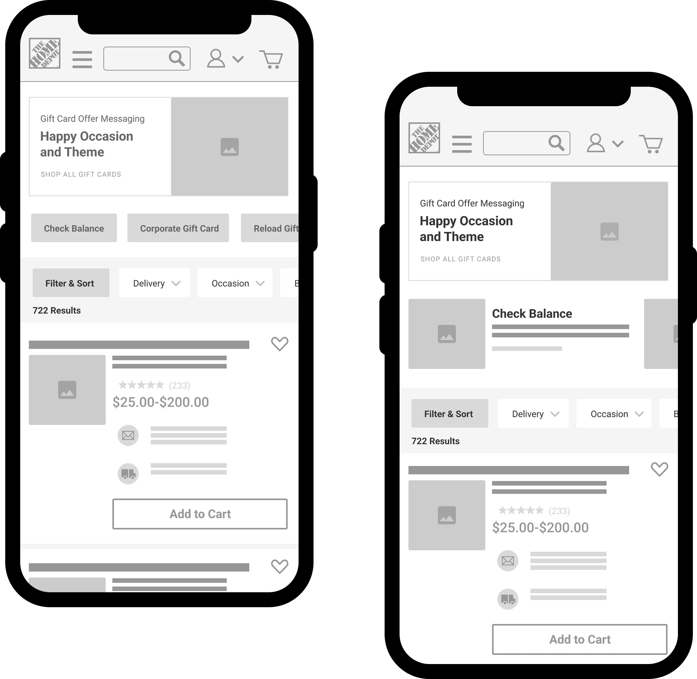
Testing Two Paths Forward
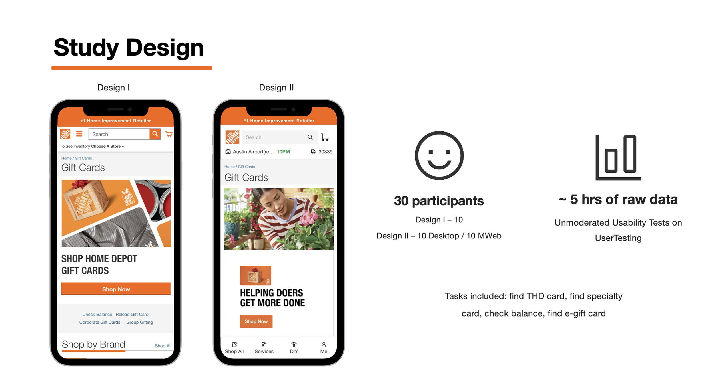
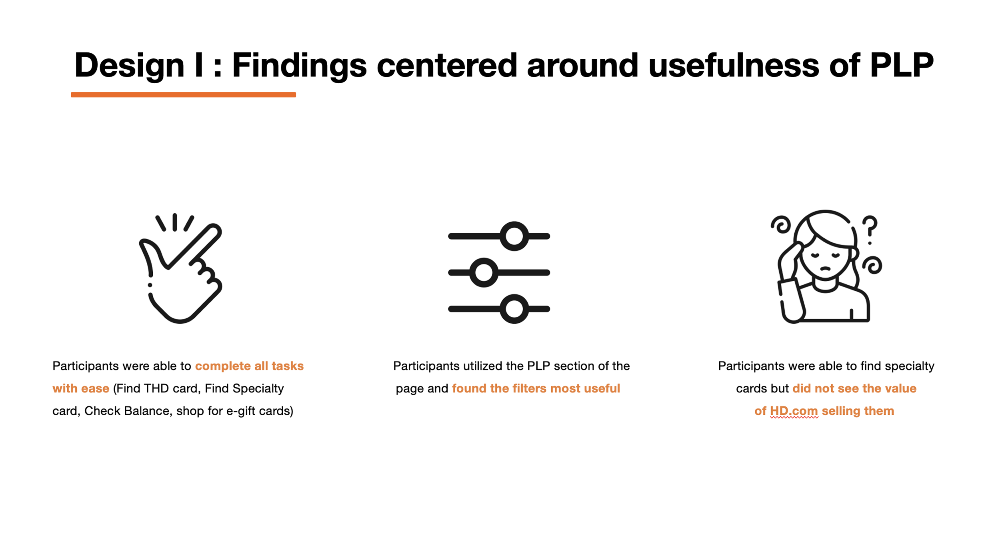
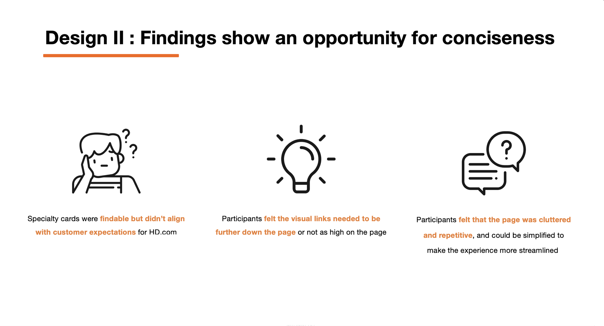
To validate our approach, we ran unmoderated usability tests comparing two distinct designs. Thirty participants across desktop and mobile were asked to complete critical tasks from both a purchaser and recipient perspective. The sessions generated over five hours of raw data, revealing which design best supported clarity, navigation, and task completion.
Cross-Functional Collaboration
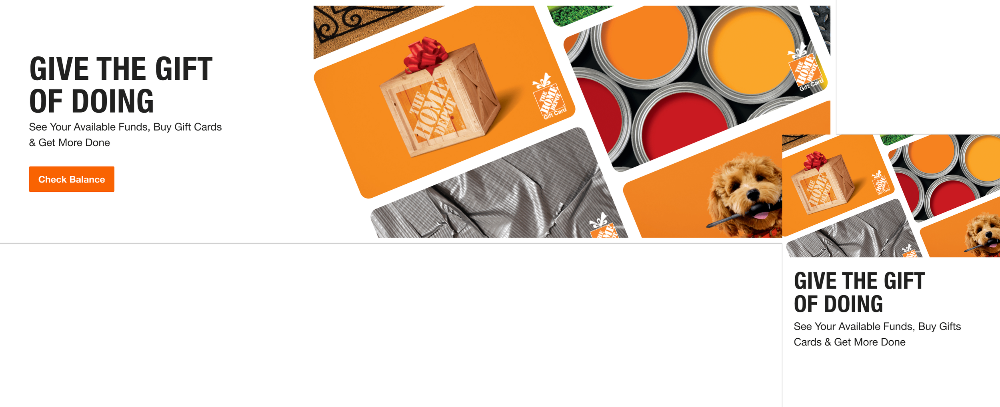
Leveraging my marketing design expertise, I crafted a gift card–centric hero that connected with both users and stakeholders. When compared to the creative marketing team's concept, my design stood out for its clarity and relevance — earning the unanimous backing of the business, product, and design teams.
Integrating Gift Cards into Checkout
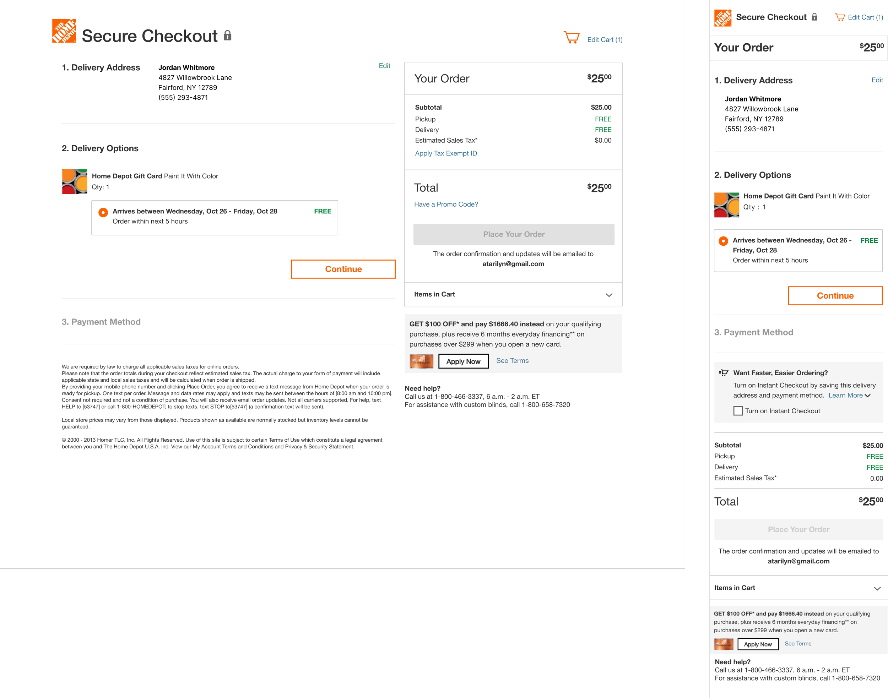
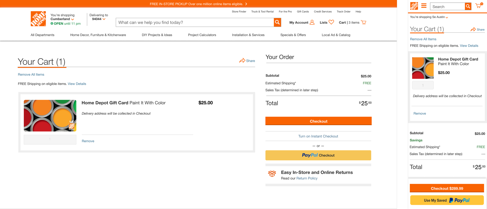
Transitioning away from a third-party checkout solution required reimagining how gift cards appeared and functioned within The Home Depot's cart and checkout experience. I developed a streamlined system that supported both digital and physical gift cards, ensuring a consistent, intuitive experience for customers.
Conclusion
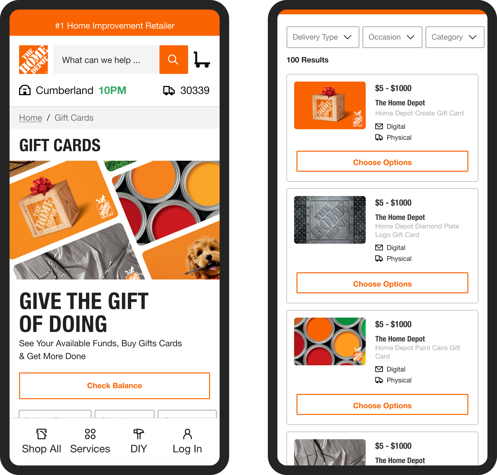
By delivering a more intuitive, visually engaging, and fully integrated gift card experience, we addressed both user frustrations and business constraints. The solution brought mixed-cart functionality, streamlined checkout, and improved discoverability for specialty gift cards — all anchored in research-driven design decisions. The results: higher conversion rates, positive customer feedback, and a scalable platform for future enhancements.